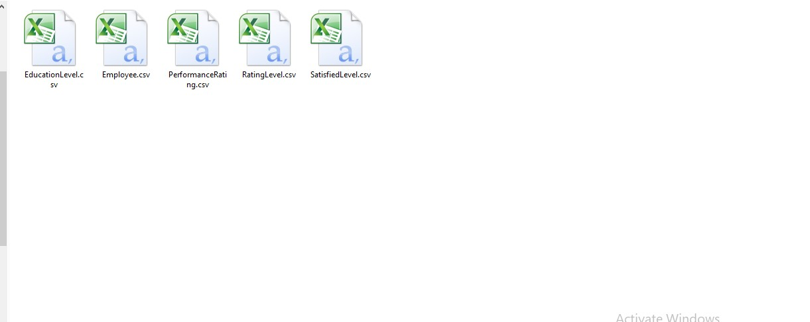
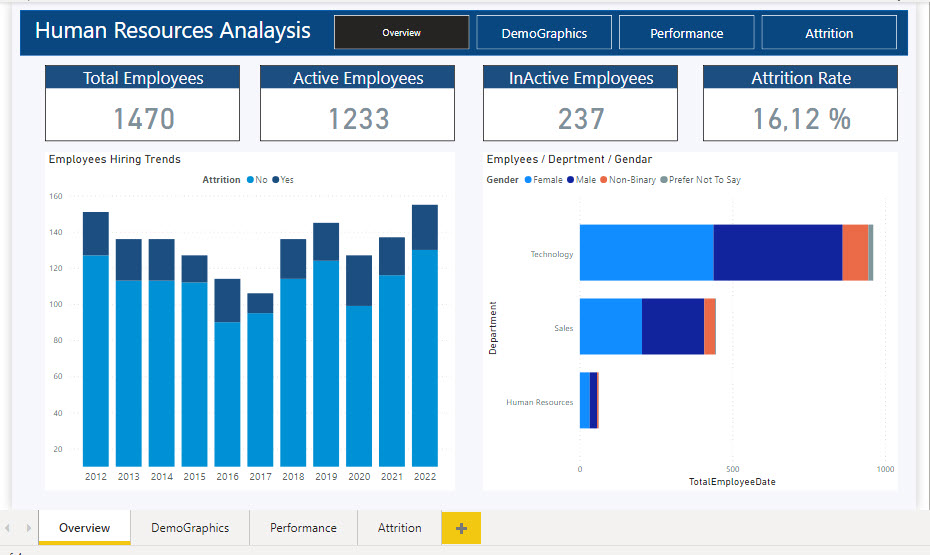
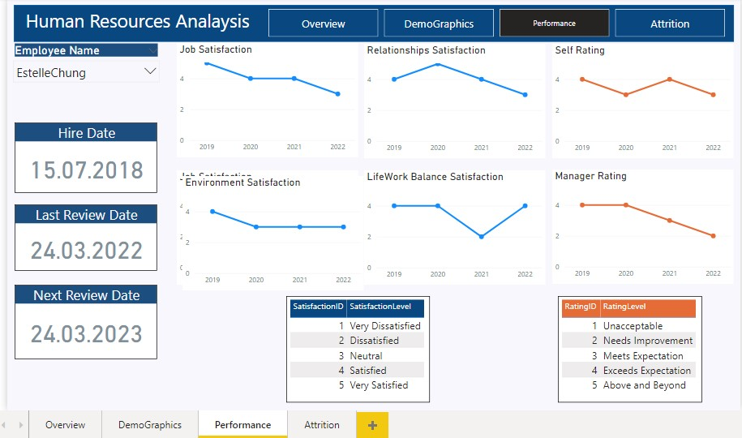
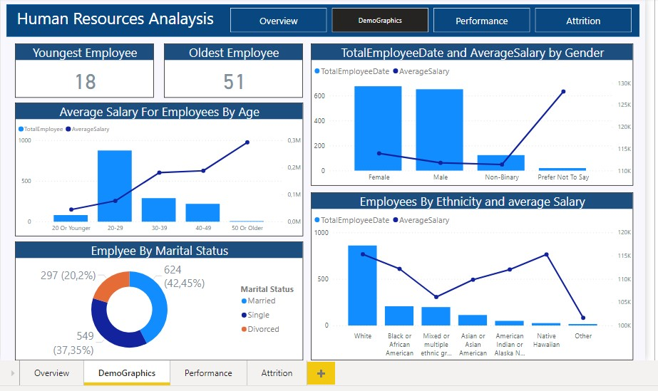
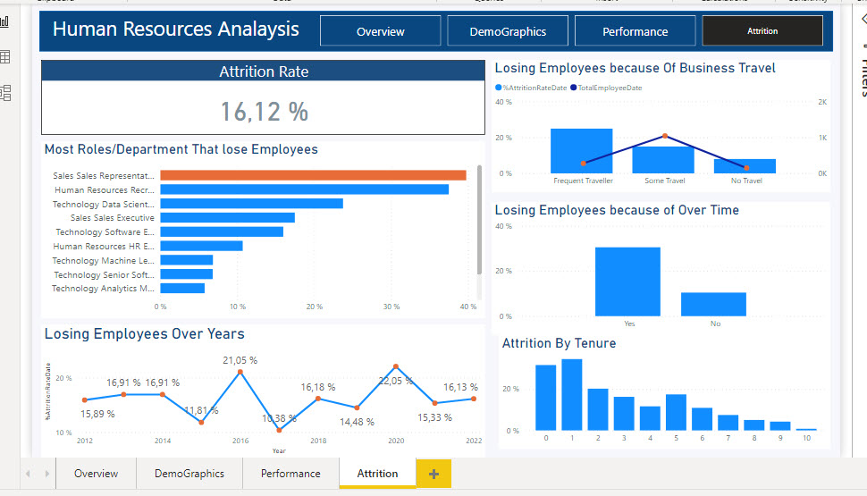

Business Request & User Stories:
The company have notice that they lose many employees , so they asked the data anaylst to understand the reasons for why the company lose employees and how can we reduce that.
Data Source:
You have access to the following information:

Clean and Prepare the Data:
1 - Create A Date table using DAX.
2-Create Relationship between Tables.
3-Create Measure Table to put all our measure/calculated column inside.
4-make sure of all data type that it do not have errors.
Questions to answer:
Overview:
1- How many Employees I have (Total, in each Department)>
2- How many Employees still working and active in the company (Active Employee)?
3- How many Employees did I lose already? (Inactive).
4- What is the attrition Rate (% Losing Employees)?
5- How many Employees I hire in a year and how many Employee I lose in a year?
Demographics:
1- What is the youngest age for my employee and what is the oldest age?
2- Employees with Martial Status?
3- Ages in every Department?
4- Average salary depending on Gender and Ethnicity?
Performance for Employee:
1- When did we hire the employee?
2- When is the last date we make review about his/her Performance?
3- When is the next date that we should make review about his/her Performance?
4- How is job / Relationships / Environment / Work life Balance Satisfaction for the employee?
5- Self-Rating and Manager rating for the Employee how it changes over time?
Attrition (Losing Employees)
1- What is the rate of losing Employees in the company?
2- Are some departments losing Employees more than others? And which job roles lose more employees?
3- Is Business Trips making us lose more Employees???
4- Is overtime work making us lose Employees?
5- Are Employees leave after specific years of experience in the company???
Data Visulaization:
i have use Power Bi in this step.
   